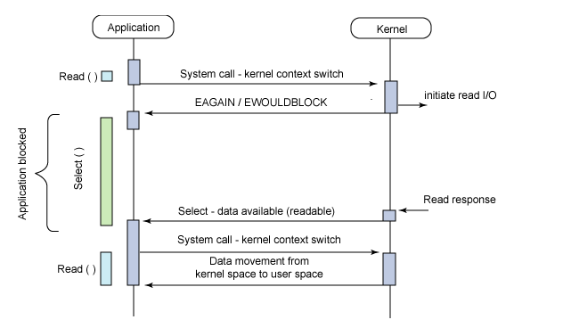

select，poll，epoll 都是 IO 多路复用的机制。I/O 多路复用就是通过一种机制，可以监视多个描述符，一旦某个描述符就绪（一般是读就绪或者写就绪），能够通知程序进行相应的读写操作。但 select，poll，epoll 本质上都是同步 I/O，因为它们都需要在读写事件就绪后自己负责进行读写，也就是说这个读写过程是阻塞的，而异步 I/O 则无需自己负责进行读写，异步 I/O 的实现会负责把数据从内核拷贝到用户空间。关于这三种 IO 多路复用的用法，之前的《select/poll/epoll(上)》写得很清楚，并用服务器回射 echo 程序进行了测试，感兴趣的可以先去看看。
今天对这三种 IO 多路复用进行对比，参考网上和书上面的资料，整理如下：
1、select 实现
select 的调用过程如下所示：

- 使用
copy_from_user从用户空间拷贝 fd_set 到内核空间 - 注册回调函数
__pollwait - 遍历所有 fd，调用其对应的 poll 方法（对于 socket，这个 poll 方法是
sock_poll，sock_poll根据情况会调用到tcp_poll、udp_poll或者datagram_poll） - 以
tcp_poll为例，其核心实现会通过sock_poll_wait调用上面注册的回调函数__pollwait __pollwait的主要工作就是把 current（当前进程）挂到设备的等待队列中，不同的设备有不同的等待队列，对于tcp_poll来说，其等待队列是sk->sk_sleep（注意把进程挂到等待队列中并不代表进程已经睡眠了）。在设备收到一条消息（网络设备）或填写完文件数据（磁盘设备）后，会唤醒设备等待队列上睡眠的进程，这时 current 便被唤醒了- poll 方法返回时会返回一个描述读写操作是否就绪的 mask 掩码，根据这个 mask 掩码给 fd_set 赋值
- 如果遍历完所有的 fd，还没有返回一个可读写的 mask 掩码，则会调用
schedule_timeout使调用 select 的进程（也就是 current）进入睡眠。当设备驱动自身资源可读写后，会唤醒其等待队列上睡眠的进程。如果超过一定的超时时间（schedule_timeout指定），还是没人唤醒，则调用 select 的进程会重新被唤醒获得 CPU，进而重新遍历 fd，判断有没有就绪的 fd - 把 fd_set 从内核空间拷贝到用户空间
总结，select 的几大缺点：
- 每次调用 select，都需要把 fd 集合从用户态拷贝到内核态，这个开销在 fd 很多时会很大
- 同时每次调用 select 都需要在内核遍历传递进来的所有 fd，这个开销在 fd 很多时也很大
- select 支持的文件描述符数量太小了，默认是 1024
2、poll 实现
poll 的实现和 select 非常相似，只是描述 fd 集合的方式不同，poll 使用 pollfd 结构而不是 select 的 fd_set 结构，其他的都差不多。
关于 select 和 poll 的实现分析，可以参考《select 源码简析》。
3、epoll
epoll 既然是对 select 和 poll 的改进，就应该能避免上述的三个缺点。那 epoll 都是怎么解决的呢？在此之前，我们先看一下 epoll 和 select 和 poll 的调用接口上的不同：select 和 poll 都只提供了一个函数——select 或者 poll 函数；而 epoll 提供了三个函数：epoll_create、epoll_ctl 和 epoll_wait。epoll_create 是创建一个 epoll 句柄；epoll_ctl 是注册要监听的事件类型；epoll_wait 则是等待事件的产生。
对于第一个缺点，epoll 的解决方案在 epoll_ctl 函数中。每次注册新的事件到 epoll 句柄中时（在 epoll_ctl 中指定 EPOLL_CTL_ADD），会把该 fd 拷贝进内核，而不是在 epoll_wait 的时候重复拷贝。epoll 保证了每个 fd 在整个过程中只会拷贝一次。
对于第二个缺点，epoll 的解决方案不像 select 或 poll 一样每次都把 current 轮流加入 fd 对应的设备等待队列中，而只在 epoll_ctl 时把 current 挂一遍（这一遍必不可少）并为每个 fd 指定一个回调函数。当设备就绪，唤醒等待队列上的等待者时，就会调用这个回调函数，而这个回调函数会把就绪的 fd 加入一个就绪链表。epoll_wait 的工作实际上就是在这个就绪链表中查看有没有就绪的 fd（利用 schedule_timeout() 实现睡一会，判断一会的效果，和 select 实现中的第 7 步是类似的）。
对于第三个缺点，epoll 没有这个限制，它所支持的 FD 上限是最大可以打开文件的数目，这个数字一般远大于 2048。举个例子，在 1GB 内存的机器上大约是 10 万左右，具体数目可以执行下面的命令察看，一般来说这个数目和系统内存关系很大：
cat /proc/sys/fs/file-max总结：
- select，poll 实现需要自己不断轮询所有 fd 集合，直到设备就绪，期间可能要睡眠和唤醒多次交替。而 epoll 其实也需要调用
epoll_wait不断轮询就绪链表，期间也可能多次睡眠和唤醒交替，但是它是设备就绪时，调用回调函数，把就绪 fd 放入就绪链表中，并唤醒在epoll_wait中进入睡眠的进程。虽然都要睡眠和交替，但是 select 和 poll 在“醒着”的时候要遍历整个 fd 集合，而 epoll 在“醒着”的时候只要判断一下就绪链表是否为空就行了，这节省了大量的 CPU 时间。这就是回调机制带来的性能提升。 - select，poll 每次调用都要把 fd 集合从用户态往内核态拷贝一次，并且要把 current 往设备等待队列中挂一次，而 epoll 只要一次拷贝，而且把 current 往等待队列上挂也只挂一次（在
epoll_wait的开始，注意这里的等待队列并不是设备等待队列，只是一个 epoll 内部定义的等待队列）。这也能节省不少的开销。
本文内容参考自网上和书上的相关资料，感谢原作者。